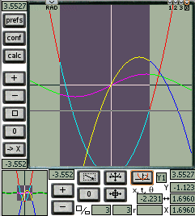
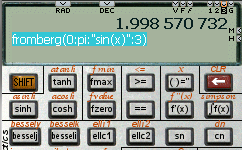

EasyCalc Manual
for Version 1.25g Pocket PC
Table of Contents
01. Introduction
02. Installation
03. Syntax and Interface
04. EasyCalc Basics
05. Preferences
06. Graphing
07. Trigonometry
08. List and Matrix Basics
09. Statistics with Lists
10. Digital Signal Processing
11. Linear Algebra with Matrices
12. Probability
13. Complex Calculations
14. Integer/Base Operations
15. Numerical Analysis
16. Solver
17. Financial Manager
18. Function Reference part 1
19. Function Reference part 2
20. Function Reference part 3
21. Some Useful Constants
A. License
B. Credits
01. Introduction
EasyCalc is a scientific graphing calculator for PalmOS and Pocket PC devices.
This manual is for the Pocket PC version.
EasyCalc has the ease-of-use of the built-in OS Calculator, but adds
all the features of a top-of-the-line (TI-89, HP-49) scientific graphing
calculator except CAS (computer algebra system) and programming
(although user defined functions are possible).
This manual is based on the EasyCalc documentation submitted by
<halliday at users.sourceforge.net> and Ondrej Palkovsky's tutorial
from previous EasyCalc versions. It also covers the new features introduced
in recent versions (>= 1.23).
Features and Specifications:
- Skinnable like Free42 (this part of the code was reused from it).
- Dynamic language support: Czech, German, Russian, Ukrainian, English, Japanese, Portuguese, French, Italian, Spanish.
- IEEE-754 double precision math routines.
- Algebraic (not RPN) entry.
- Range of values: +/- 1E-308 to +/-1E308 (IEEE 754 double precision);
up to 15-digit (user-selectable) decimal precision.
- 150+ built-in functions including: trigonometry, complex numbers,
exponential, probability, statistics, numerical analysis of functions
(roots, derivatives, integrals, intersection), discrete math, digital
signal processing, list, matrix, and special.
- Unlimited user-defined variables and functions.
- Multipe levels of nested parentheses limited only by available stack memory.
- Multiple screens easily categorize functions.
- "ANS" button (last result).
- Scrolling history.
- Scrolling menu access to user- and built-in functions and variables.
- Angular Units: Radian, Degree and Grad.
- Integer Base Operations: Decimal, Binary, Hexadecimal, and Octal.
- Display Formats: Normal, Scientific and Engineering display modes.
- Automatic parentheses matching.
- Full OS clipboard support.
- Complex number support in all functions.
- Graphics (available as of 1.25g PPC):
- Normal (Cartesian), polar, and parametric graphs.
- Graph up to six functions simultaneously with trace and numerical analysis.
- Graphs have user definable colors, axes, axes lables, range, grid, log and log-log.
- Zoom in/out.
- Live screen scrolling.
- Adjustable graph resolution.
And more coming in future versions...
Back to Contents
02. Installation
Requirements
Windows mobile device with WM5, WM6 or compatible.
About 600K of free memory.
Installation
Before upgrading, export user variables and functions to unicode or MBCS text files as a precaution.
It is also a good idea to copy the state.bin file to some place or under another name,
like state.bin.sav, in case something goes wrong in the migration and we want to investigate it.
Until there is a .CAB file, install program and accompanying files in the archive in the directory of your choice.
Keep the directory structure.
It is possible to not copy the docs subdirectory in order to save space,
removing access to calculator help.
The Help->Help sub-menu item will then start Internet Explorer on a non existing page
and will generate an error message inside IE.
After install, if needed import your user variables, functions and equations from .utxt or .txt files (.utxt is unicode).
On first install, or after a clean install, EasyCalc issues the following message,
which is normal:
"No or wrong version state file (normal on first run or after a clean install). Reinitializing with defaults."
Simply close the application with File->Exit, and next time it is open, no such message will appear again.
The reason EasyCalc is delivered with no state.bin file is that this file is storing all user variables, user functions, equations and configuration.
If a default state.bin file were supplied in the package, it would replace the existing state.bin file, and one would lose one's work / config each time one upgrades to a new release.
Uninstallation
Until there is a CAB file for install, simply delete the directory where EasyCalc has been stored.
Note
See also the file ReadMe.txt in the distribution which contains the most recent
information about installing EasyCalc.
Back to Contents
03. Syntax and Interface
Conventions used in this manual:
- ans> will be used to indicate the results of entering the
previous statement into EasyCalc (what is shown on the 'Result Line')
- 'Single Quotes' are usually used only for clarification, and
should not be entered. 'Single quotes' should be entered when used as an
operator in matrix transposition, DegreeMinuteSecond-style entry, and complex
conjugates.
"Double quotes" are required around the expression
when defining a function.
- Curly braces {} are used to indicate optional parameters.
- When an example expression is given, the next line(s) should be
entered into EasyCalc exactly as shown, followed by the 'EXE' key (or
the Palm 'Return' Graffiti stroke).
EasyCalc Syntax
To enter numbers or functional expression (such as 3*sin(pi/2)),
you may use the on-screen buttons, graffiti and/or keyboard, and switch between
them at will.
EasyCalc supports 'implicit' multiplication (without the '*' operator):
3e+1
ans> 9.154 845 485
3E+1
ans> 30
The priority of the hidden implicit multiplication operator is very
high. When you enter 3^6pi, 3^(6*pi) is executed.
The priority of an explicitly written multiplication '*' operator is as
expected.
EasyCalc doesn't require closing parentheses:
2sin(pi/2
...is interpreted as 2*sin(pi/2)
ans>2
The 'ANS' button displays the last computed result.
The 'ans' variable is inserted automatically when you are at the
beginning of the line, and press some 'operation' button.
Example:
sin(pi)
...now tap the 'plus' button
ans> ans+
...now complete the expression with '1', and tap EXE to compute sin(pi)+1>.
Tip: if you select an expression (or a part of it), and then tap a
function button, the selected text is inserted into the function and
remains selected.
This works for parentheses, too: if you forgot to put part of an
expression in parens, simply select it and tap the '(' button.
EasyCalc Interface
On the main EasyCalc screen:
First is a line of 'annunciators', showing modes and menus. Tap on them to change or trigger actions, see below for more details.
The first line below the 'annunciators' is the 'Results Line', where EasyCalc
displays the results of computations or error messages.
If the contents of the Result Line are too long to display, tap on the arrow annunciators which appear on each side to scroll left or right.
In a later release, you will be able to drag the Result Line left and right to see the whole thing.
On the side is another set of 'annunciators' to tap.
The next two lines are the 'Entry Line', where user input is
entered.
Annunciators:
- Tap on 'Rad'/'Deg'/'Grd' to change the Angular mode (See Trig section).
- Tap on 'Dec'/'Oct'/'Bin'/'Hex' - to change the numeric display/input mode.
- Tap on 'V' to bring up user-defined variables:
- Tap on 'F' to bring up user-defined functions.
- Tap on 'f' to bring up a list of EasyCalc built-in functions.
- '1', '2', '3', 'G' - select the active skin (3 skins, and a Graph mode).
Note: G became available as of 1.25g PPC.
- 'M' pops up a menu:
- Copy (results to OS clipboard)
- DataMgr (edit user variables and functions)
- Save as (results to a variable)
- GuessIt (simplify result - see Basics)
->xxx display (display in normal, scientific or engineering form. Ex: 1E6 -> 1M)
->Degree, ->Degree2, ->Radian, ->Grad convert to another angular metric (see Trig section).
- 'H' - history of user entries and results, most recent at top.
Back to Contents
04. EasyCalc Basics
EasyCalc supports all common (and most uncommon) mathematical functions
and operations found on the best scientific calculators. See the
Function Reference sections for a complete list of all functions.
Variables and Functions
EasyCalc supports an unlimited number of variables and functions.
Variable names cannot be: pi, e, f, i, j, k, m, n, p, u, or x (see the
Function Reference section for details). They may consist of lower-case
letters, numbers, and the underscore symbol '_', and can be up to 10
characters long. If you define a variable with the same name as a
function, the function will be overwritten (and vice versa).
A variable is defined by entering:
name=value
Example:
a=31
The value 31 is stored in variable 'a', which can be used in other
expressions and calculations.
If you then enter a=3*a thevariable 'a' will contain the number
93.
A function is defined by entering:
name()="expression"
The "expression" must be enclosed in double quotes, and the
parentheses must be left empty).
Example:
f()="x^2"
f(3)
ans> 9
Function definitions must use 'x' as the parameter.
You can delete or edit defined functions and variables by tapping the
'DataMgr' in the 'M'-menu (to the right of the Result Line).
To define functions that accept more then one input variable, use 'x' or
'x(1)' for the first parameter, 'x(2)' for the second parameter, 'x(3)'
for the third, etc. When calling the function, separate values with a
colon.
Example (quadratic formula):
quadsoln1()="( -x(2) + sqrt(x(2)^2 - 4*x(1)*x(3)) ) / (2*x(1))"
quadsoln1(1:-2:-3)
ans> 3
You can separate multiple expressions or definitions on one line with a
semicolon ';'. Only the result of the last expression is displayed.
Example:
a=3;b=7;c=4;quadsoln1(a:b:c)
ans> -1
b^2
ans> 49
Programming
EasyCalc can't execute 'programs', except by separating functions and
expressions with the semicolon.
EasyCalc can save its workspace of user-defined variables and functions
to MemoPad. In the Special menu, select 'Export to memopad' or 'Import from
memopad'. If there is a category named 'EasyCalc' in MemoPad, only
memos from that category are displayed.
The first line of an imported memo (the title) is not executed. The
imported memo is executed just as if you inserted the text line-by-line
into the calculator.
Simple function routines can be built using the semicolon, lists for
input/output series, user defined variables and functions, and the
ask(), and if() functions, although only one line can be
executed at a time.
ask("title"{:default value}) - opens a dialog with the (optional)
default entered. Returns the user input.
if(test:true-expr:false-expr) - evaluates test and returns
the appropriate expression. Test must return a positive integer ('true') or
zero ('false'). The not used expression is not evaluated.
Example: Recursive factorial definition.
myfact()="if(x>1:x*myfact(x-1):1)"
ans> myfact()
myfact(3)
ans> 6
myfact(100)
ans> Too deep recursion - Limited stack space for recursion !!!
res=myfact(ask("Enter argument for myfact":5))
Tap/Select 'OK'
ans> 120
'GuessIt' Simplification
EasyCalc can rationalize a number to fractions, common square roots, and
powers of e or pi. If the number is integer it tries to write the number
as prime factors
Examples:
acos(0)
ans> 1.570 796 327
in the 'M' menu, choose 'GuessIt':
ans> pi/2
6/21+1/5
ans> 0.485 714 286
'M' ->GuessIt
ans> 17/35
533
ans> 533
'M' ->GuessIt
ans> 13*41
Back to Contents
05. Preferences
Radian/Degree/Grad mode - applies to all calculations. Can also be set
on the main screen taping on annunciators.
Decimal/Binary/Octal/Hexadecimal - sets output formatting mode. Can also
be set on the main screen taping on annunciators.
Normal/Scientific/Engineer - display mode for results.
Force integer nums - Note: Graphing will NOT work properly with this
checked. Generally, you will not check this UNLESS you are working with
base conversions. This setting applies to input recognition and
displaying results, but doesn't change computing behavior. The
expression '3.14159' isn't recognized in integer modes (Bin/Oct/Hex),
because '3.14159' is a floating point number. 'pi' outputs the correct
result regardless of mode, because 'pi' is a floating point constant.
Floating point output formatting prints at most 10 digits, but integer
number formatting will print always the whole number - this makes sense
only for 32-bit numbers converted to Binary. See the Integer/Base
Operations section for more details.
Precision - the number of digits to display after the decimal point.
Reduce precision - When checked, floating point numbers are rounded off
to 13 places after each calculation, and will round certain results
smaller than 1E-14 to zero. This avoids results like: sin(pi)=1E-15.
Selecting this option slows all operations a little, so I recommend
switching it off if you are going to use Numerical Analysis (fzero(),
etc.). If you use Numerical Analysis in Graphing mode, 'Reduce
precision' turns off automatically.
Strip zeros - output '3.100' or '3.1'
Insert Help - insert argument names for some multiparameter functions
on the input line.
Match ()'s - Can be very handy. If checked, then tapping a function
button automatically inserts the closing bracket and moves the cursor
position between the brackets.
OS Num Prefs - If checked, EasyCalc allows entering numbers exactly
according to OS Preferences. Not recommended unless you use
clipboard for moving data from other applications.
Show Units - If checked and the engineer mode is selected, numbers get a
unit to them at the output (e.g. 1E6 -> 1M ).
Back to Contents
06. Graphing (made available with 1.25g PPC)
Entering/Plotting Graphs
Switch to Graph mode by tapping the 'G' at the top of the screen.
Set up the functions to graph by tapping 'conf'.
Tap the area to the RIGHT of 'Y1' and enter any valid expression in terms
of 'x', such as 'x^2-4' - but WITHOUT any quotes.
[Not in PPC version -> For each graph you can select the color and the line style
(line/points/vertical).]
Each graph can be turned on and off individually.
[Not in PPC version -> The color of the axes, the grid and the graph background are also user
selectable. You can also turn the axes, axes labels and the grid on and off.]
Change Graph Preferences by tapping 'prefs'.
Here you can setup the display area (min and max bounds, grid interval) and
type of graph (normal, polar, parametric). Either axis can be logarithmically
scaled. Note that for Polar graphs the angle units (th-min, th-max, th-step)
obey the Rad/Deg/Grd setting.
You may also enter an existing user-defined function, and if necessary,
pass it additional parameters (to make it a graphable function of one
variable).
Example:
In Scientific mode, define this familiar function of 1 variable 'x', and
3 other parameters:
quad()="x(2)*x^2 + x(3)*x + x(4)"
In Graphing mode,
Tap 'conf' to Setup Graphs.
Tap the area to the right of 'Y1'.
Tap 'F' (user functions) and select quad().
Enter 4 parameters for quad(), which will be passed to x, x(2), x(3),
and x(4). Here, we tell EasyCalc to take the first parameter as the
independent variable for the graph (must always be 'x'), and take the
other three as constant parameters:
quad(x:1:-2:-3)
You may enter up to six functions in each mode (Function, Polar,
Parametric). The functions are stored as 'z_grafun1()', 'z_grapol1()',
'z_grapara1()', etc., and can be
used and modified in the non graphical modes.
When entering an expression, the 'V', 'F', and 'f' buttons are
available and work the same as on the main screen.
To remove a function, tap the 'Y1' button itself and select 'Delete' from
the popup menu.
Graph
There is a graph zone and a smaller track view zone which highlights
where is the graph view zone if it's in there.
Select or scroll graph
On both zones, you can tap and drag the graph to scroll around, or select
a point on, or a part of, the graph, depending on the mode.
Select mode: This is the button with the select square.
Move mode: This is the button with a curve and vertical + horizontal arrows.
Curve track mode: This is the button with a curve and dashed lines.
The 'calc' key only works in this mode, when a point is selected, or a zone is selected.
When pressing the key, a popup asks for which curve to track on.
Center mode: This is the button with a rectngle and vertical + horizontal arrows.
In each mode, tap or drag has the following effect:
|
Graph zone |
Track zone |
Track sync'ed to graph ? |
| Select mode |
drag = update x,y + define zoom in (press '+' to zoom to it). Can be non square.
tap = update x,y
|
drag = update x,y + define graph zone (press '+' to set graph to it). Can be non square.
tap = update x,y
|
N
|
| Move mode |
drag or tap = update x,y + move graph zone.
|
drag or tap = update x,y + move track zone.
|
N
|
| Curve track mode |
drag = update x,y + define selected zone on curve.
tap = update x,y + define selected point on curve.
|
drag = same.
tap = same.
|
N
|
| Center mode |
drag or tap = Same as Move mode.
|
drag or tap = update x,y + move graph zone.
|
Y, centered on graph each time the graph is moved
|
Zoom, normed display, moving through graph
There is one set of zoom buttons for each of the graph zone or the track view zone.
They function in the same way. However, the track view zone will always be normed,
i.e. in "square" mode, or in other words, 1 vertical = 1 horizontal. So it will
fit to the biggest border of the selected rectangle.
A contrario, the graph zone will show all the defined selected zone in Select mode.
Meaning that selecting a rectangle will result in a non normed display, where
1 vertical != 1 horizontal : the biggest rectangle border will be "shrinked" to
fit with the display square to include everything.
Come back to a normed mode (square mode) by tapping on the square button.
- '-' button - zoom out by a 2x factor
- '+' button - zoom in. In Select mode, select zone and tap '+' to zoom on it.
In other modes, or in select mode but with no selection, tap '+' and zoom by
a 2x factor on the graph center.
- 'square' button (only for graph zone) - restore a normed display. This will expand the [min, max]
range on the smallest axis to the same extent than the biggest one, keeping
the same center.
- '0' button - Bring zone center back to origin (0, 0).
- '->' button - Goto specified (x, y) = a dialog will appear to type X then Y.
Note that in Curve track mode, there will be no dialog asking for 'Y'. Instead,
Y will be calculated from the specified X using the selected curve.
- Use up/down and left/right arrows to move the graph zone accordingly.
Table Mode [Not in PPC version]
(Menu-> Graph-> Table Mode) displays exact values of the parameter 'x'
and values of all the functions simultaneously.

GoTo will start the table at a specific value (Tip: you may just write a
number, without tapping GoTo first)
The initial table step value is set by the 'xscale' parameter in Graph
Preferences. It can be changed on the Table Mode form by tapping the Step
button.
How to use the Curve track mode
Tap on
 then select a function to track or select on ('Y1' etc.).
then select a function to track or select on ('Y1' etc.).
Tap on screen to show a cross, with vertical line = selected X, and
horizontal line = calculated Y on the selected curve.
Tap then drag to show a selected zone on the curve, from x0 to x.
X and Y on the bottom left will show the last selected point.
The two numbers on each side of '<->' on the bottom left will show
the selected range: x0 to x in function mode, t0 to t in parameteric mode,
and th0 to th in polar mode.
In function mode, dragging the pen horizontally traverses the x range
defined in Graph Preferences. In polar mode, dragging the pen horizontally
traverses the th angle range defined in Graph Preferences.
And in parametric mode, dragging the pen horizontally varies the parameter t
over the range defined in Graph Preferences.

Numerical Analysis
EasyCalc can find a zero (root), value, local minimum and maximum of a
function, first and second derivatives, integral, and intersection with
another function:
Tap the 'calc' button in Curve track mode, after having selected a point or
an area.
Select an operation from the presented list:
- zero, find value, min, max, intersection, integral require a zone selection,
- derivatives require a point selection at least (or they will calculate on
the maximum x of selected zone).
Note: intersection will ask you to select a second function.
The result of the operation will be stored in a variable called 'graphres'.
Notes
-
EasyCalc will only find one solution in an interval. Zoom in if
multiple results are possible.
- Deg/Rad/Grad mode must be properly set for Trig graphs.
- 'Force Integer Nums' (in 'Preferences') will cause graphs to be
plotted very strangely - as dots at integer points, or not at all.
- EasyCalc simply connects calculated points, and so does not handle
discontinuities perfectly (such as the vertical asymptotes in 'tan(x)').
This effect is worse at faster graph speeds, and when zoomed out.
You can make EasyCalc graph even slower than 1x by graphing as a
parametric graph (set 'X1=t' and 'Y1=tan(t)'. Then set the T-step as
small as necessary for the desired results.
Back to Contents
07. Trigonometry
Normal, inverse, and hyperbolic trig functions work as expected. See the
Function Reference for a complete list.
Trigonometric functions can take complex, list, or matrix arguments. For lists
and matrices, the function is applied to each element individually.
Set Deg/Rad/Grad mode by tapping the annunciator at the top of the screen,
or in File->Options->Preferences.
Note: Be sure to check the mode when using Trigonometric functions!
Trigonometric display conversions are found in the 'M' menu (on the right side of
the Results Line):
M ->GuessIt - may come up with a helpful simplification
in any mode:
M ->Degree - display as D°M'S
M ->Degree2 - display as D°M.sss'
M ->Radian - display in Radian, as a multiple of pi
M ->Grad - display in Grad
Coordinate Conversion
The following results depend on the Deg/Rad/Grad setting. The mode is
set to Degree for the examples.
Rectangular to Polar:
rtopr(x:y) - Radius of the point (x,y)
rtopd(x:y) - Angle of the point (x,y)
rtop(x:y) - Returns a list [radius:angle].
Polar to Rectangular:
ptorx(rad:ang) - x-coord of point at radius, angle
ptory(rad:ang) - y-coord of point at radius, angle
ptor(rad:ang) - returns a list [x:y].
hypot(x:y) - returns the length of the hypotenuse of a right triangle
with sides x and y.
Examples (in Deg):
rtopr(1:sqrt(3))
ans> 2
ptor(2:30)
ans> [1.732050808:1]
hypot(1:1)
ans> 1.414 213 562
Example(in Rad Mode):
rtop(1:sqrt(3))
ans> [2:1.047197551]
Back to Contents
08. List and Matrix Basics
Most properties of lists and matrices are similar.
Lists are defined in the form:
[1:2:3]
Matrices with m(rows) x n(cols) are defined in the form:
[[1:2:3]:[3:4:5]]
...this operation creates 2 by 3 matrix that is stored in the variable
'ans'.
Lists/Matrices can be stored to a variable directly from the Input Line:
d=[[1.1:-2.2:3]:[1:1.4:4]:[6:1.5:-2.6]]
list1=[1:-2:2:3:0:4:-4:0:7:5]
Lists/matrices too large to be displayed entirely on the results line
will show only their dimensions:
ans> list(..20..)
ans> matrix(8,3)
Tapping the Result Line when it contains a list or matrix takes you into
the List or Matrix Editor. The List and Matrix Editors can also be
accessed from the 'Special' menu.
In the List/Matrix Editors, you specify the name for the list/matrix,
its dimensions, and the values of the elements. If necessary, scroll
using the arrows at the bottom and/or right of the screen.
Tip: in the List Editor, once a list has been selected for editing, you
can just start writing to append elements to the end.
If a scalar variable or a function is entered into a list or matrix, it
is pre-evaluated. Only the value, not the variable reference, is stored
in the matrix. Also, a matrix can be built from lists of the appropriate
size.
Example:
func1()="x-3"
var1=5
list3=[1:2:var1]
mat_b=[list3:[4:var1:6]:[1:0:func1(var1)]]
ans> [[1:2:5]:[4:5:6]:[1:0:2]]
Complex numbers are allowed in lists and matrices:
mat_c=[[1:i+6]:[4i:3]]
dim(x) - dimension (size) of list/matrix 'x'. Returns a scalar if the
input is a list, and a list if the input is a matrix:
dim([1:2:3:-1])
ans> 4
dim([[1:2:3]:[3:4:5]])
ans> [2:3]
Alternate Method for Creating Lists/Matrices
list(elem{:elements}) - returns a list composed of the elements. If the
elements are lists themselves, list() returns a matrix:
list(1:2:3)
ans> [1:2:3]
list([1]:[2:3:4:5])
ans> [[1:0:0:0]:[2:3:4:5]]
matrix(m:n:{elements}) - returns an m x n matrix of elements:
matrix(2:3:1:2:3:4:5:6)
ans> [[1:2:3]:[4:5:6]]
Mixed Scalar/List/Matrix Assignments
s=list[i] (or list[i:i]) returns the i-th element of a
list
l=list[i:k] (k != i) returns a list with the elements from i to k
of a list
s=matrix[m:n] returns the element of the m-th row and n-th column
of matrix
l=matrix[m:.] (or matrix[m:0]) returns a list with the m-th
row of matrix
l=matrix[.:n] (or matrix[0:n]) returns a list with the n-th
column of matrix
list[i]=val (or list[i:i]=val) assigns val to the i-th
element of list and returns list
list[i:k]=list2 (k != i) assigns the elements of list2 to the
elements from i to k of list and returns list
matrix[m:n]=val assigns val to the (m,n) element of matrix and
returns matrix
matrix[m:.]=list (or matrix[m:0]=list) assigns the elements
of list to the m-th row of matrix and returns matrix
matrix[.:n]=list (or matrix[0:n]=list) assigns the elements
of list to the n-th column of matrix and returns matrix
Scalar Operations
List addition, subtraction, and multiplication act on elements taken as
pairs, so the lists must be of the same size (dimension).
Most scalar functions can take a matrix or list as a parameter, and
return a matrix/list with the function applied to each element:
sin([[pi:0]:[pi/2:3pi/2]])
ans> [[0:0]:[1:-1]]
[1:-2:2:3]^2
ans> [1:4:4:9]
[[1:1]:[2:2]]+1
ans> [[2:2]:[3:3]]
List Manipulations
sift(f:x) - drops all elements for which f returns zero
sift("x<9":list(2:9:3:10:1))
ans> [2:3:1]
sift("isprime(x)":range(100))
ans> ..list(xx).. returns list of primes.
sift(x:y) - drops all elements from y where x is zero, both
lists must have same length.
sift(list(1:2:0:1):list(9:2:3:9))
ans> [9:2:9]
find(f:x) - returns indices where f(x) is nonzero.
find("isprime(x)":[10:11:12:13:14])
ans> [2:4] since 11 and 13 are prime.
sample(x:y) - returns the elements of x indexed by y.
sample([0:1:2:3:4]:[1:3:5])
ans> [0:2:4]
map(f:x) - applies f to each element of x.
In most cases this is done transparently:
map("x+1":[3:4])
ans> [4:5]
but in some cases not:
a=list(1:2:3);map("a[x]":list(3:1))
ans> [3:1] (=list(a[3]:a[1])).
map(f:x:y) - applies f to each pair of x and y (not only
matching pairs).
map("x(1)+x(2)":[2:5]:[10:30])
ans> [12:15:32:35]
zip(f:x:y) - applies f to each maching pair of x and y.
zip("x(1)+x(2)":[2:5]:[10:30])
ans> [12:35]
concat(x:y[:z:...]) - concatenates two or more lists.
concat([1:2]:[3:4:5]:[6:7])
ans> [1:2:3:4:5:6:7]
repeat(x:a:b) - will repeat a list's elements. a means how
often to repeat, b means how large parts (0 for full list) to repeat.
repeat([1:2:3:4]:3:0)
ans> [1:2:3:4:1:2:3:4:1:2:3:4]
repeat([1:2:3:4]:3:1)
ans> [1:1:1:2:2:2:3:3:3:4:4:4]
repeat([1:2:3:4]:3:2)
ans> [1:2:1:2:1:2:3:4:3:4:3:4]
repeat([1:2:3:4]:3:3)
ans> [1:2:3:1:2:3:1:2:3:4:4:4]
kron(x:y) - computes all possible products between the elements
of x and those of y.
kron([1:2:3:4]:[1:0:-1])
ans> [1:0:-1:2:0:-2:3:0:-3:4:0:-4]
Back to Contents
09. Statistics with Lists
Lists are used to store sets of data for statistical analysis.
Automatic Sample Generation
rand - returns a pseudo-random number between 0 and 1.
rand(n) - returns an n-dimension list containing 'n' pseudo-random
numbers, each uniformly distributed between 0 and 1.
rNorm(n)- returns an n-dimension list containing 'n' pseudo-random
numbers, normally distributed with a mean of 0 and std dev of 1.
range(n{:start{:step}}) - returns an n-dimension list containing
sequential values. Start and step (optional) default to 1.
Examples:
range(4)
ans> [1:2:3:4]
range(4:100)
ans> [100:101:102:103]
range(6:2:3)
ans> [2:5:8:11:14:17]
Functions
In the following examples list1=[1:-2:2:3:0:4:-4:0:7:5]
sum(listx) - sum of all elements:
sum([i:1:2])
ans>3+i
cumsum(listx) - list containing the cumulative sum of the
elements:
cumsum(list1)
ans>[1:-1:1:4:4:8:4:4:11:16]
prod(listx) - product of all elements:
prod[1:2:3]
ans>6
mean(listx) - mean of the list computed as sum(listx)/dim(listx):
mean(list1)
ans>1.6
gmean(listx) - geometric mean of the list computed as
prod(listx)^(1/dim(listx)):
gmean(list1)
ans>0
gmean([3:2:5:1])
ans>2.340 347 319
median(listx) - median of the list:
median(list1)
ans>1.5
sorta(listx) - ascending sort
sortd(listx) - descending sort:
sorta(list1)
ans>[-4:-2:0:0:1:2:3:4:5:7]
sortd(list1)
ans>[7:5:4:3:2:1:0:0:-2:-4]
lmin(listx) - minimum value in list
lmax(listx) - maximum value in list:
lmin(list1)
ans>-4
lmax([1:10i:6])
ans>6
lmax(abs([1:10i:6]))
ans>10
lmode(listx) - most frequently occurring item in a list:
lmode([1:2:3:3])
ans>3
The 'unbiased' (Sample) variance is defined as
variance = sum(x-mean(listx)) / (dim(listx)-1).
However, the 'biased' (Population) variance of a list is defined as
variance = sum(x-sum(listx)/dim(listx)) / dim(listx).
variance(listx) or variance(listx:0) - sample variance of
list
variance(listx:1) - population variance
stddev(listx{:flag}) - computes standard deviation where
stddev = sqrt(variance()). Uses the variance formula based on the optional
flag setting (see variance).
moment(listx:n) - the n'th moment of a list
skewness(listx) - skewness of listx
kurtosis(listx) - kurtosis of listx
varcoef(listx) - coefficient of variance of listx
cov(listx:listy) - covariance of listx and listy
corr(listx:listy) - correlation coefficient of listx and listy
linreg(listx,listy) - returns an equation for the linear regression of
listx and listy (using least squares method)
Back to Contents
10. Digital Signal Processing
All vectors and signals in the following descriptions are EasyCalc lists.
filter(x:a:b) - filters the data in vector x with the filter
described by vectors a and b to create the filtered data y. The
filter is an implementation of the standard difference equation:
a1*y(n)=b1*x(n)+b2*x(n-1)+...+bnb+1*x(n-nb)-a2*y(n-1)-...-ana+1*y(n-na).
conv(x:y) - convolution of two signals. (If x and y are vectors
of polynomial coefficients, convolving them is equivalent to
multiplying the two polynomials).
dft(x[:N]) - N-point Discrete Fourier Transform of a signal.
idft(x[:N]) - N-point Inverse Discrete Fourier Transform.
fft(x[:N]) - N-point Fast Fourier Transform of a signal (N is
a power of 2).
ifft(x[:N]) - N-point Inverse Fast Fourier Transform (N is a
power of 2).
fftshift(x) - shift DC component to center of spectrum.
Caution: dft and idft are very slow procedures, they can hold
your device for a long time with large values of N. Use fft and ifft instead.
Example:
Look at a signal consisting of two sinusoids of 5 and 12 Hz with some noise
added sampled for 2 seconds with a sample period of 0.01 sec.
tt=range(200:0:0.01) list with sample times
ans> list(..200..)
yy=0.7sin(2pi*5*tt)+sin(2pi*12*tt)+0.5rNorm(200)
ans> list(..200..)
yf=fft(yy)/200
ans> list(..256..) fft() rounds up to next power of 2
ff=range(128:0:50/128) for a real signal the fft is symmetric around
the center element. ff is the frequency range.
ans> list(..128..)
spec=2*abs(yf[1:128]) compute the single sided spectrum
ans> list(..128..)
To plot the signal and the spectrum we use the parametric mode on the graph
layout (only available as of 1.25g PPC). The parameter T is the list index.

Note the peaks in the spectrum at 5 and 12 Hz.
Back to Contents
11. Linear Algebra with Matrices
Normal matrix addition, subtraction, and multiplication are supported.
Examples:
matrix_q+matrix_p
a-[[0:0]:[1:-1]]
a*b
identity(n) - returns the n x n identity matrix
matrix_q^-1 - returns the matrix inverse of (user-defined) 'matrix_q'
a' - returns the transpose of matrix 'a'
det(a) - returns the determinant of matrix 'a'
Matrix Reduction Operations
rref(a) - returns the reduced row-echelon form of a matrix. Often used
to find a solution to system of equations.
Example with two linear equations:
1x + 2y = 3
4x + 5y = 6
Store the system as an augmented matrix to 'matrix_a':
matrix_a=[[1:2:3]:[4:5:6]]
rref(matrix_a)
ans> [[1:0:-1]:[0:1:2]]
The solution is found in the right column of the answer (x=-1, y=2).
Householder QR Factorization
EasyCalc can factor a matrix 'a' into matrices qrq(a) and qrr(a).
qrr(a) generally decomposes a full rank matrix to a simpler form.
For an m x n matrix:
q=qrq(a) returns an orthogonal m x m matrix
r=qrr(a) returns an upper triangular m x n matrix
The result of qrq(a) * qrr(a) is the original matrix 'a'.
Example:
mat3_4=[[1:2:3:4]:[2:3:4:5]:[3:4:5:6]]
q=qrq(mat3_4)
r=qrr(mat3_4)
qrq(mat3_4) * qrr(mat3_4)
ans> [[1:2:3:4]:[2:3:4:5]:[3:4:5:6]] (the original matrix)
Linear systems in the form 'Ax = b' can be solved by replacing 'A' with
'QR'.
qrs(Ab) uses Householder QR decomposition and back-substitution. This
approach may solve matrices that are not solvable with rref().
Example:
matrix_a=[[1:2:3]:[4:5:6]]
qrs(matrix_a)
ans>[[1:2:-1]:[4:5:2]]
The original 'A' matrix is returned, augmented with the solution 'x',
which is (-1, 2).
Note: for qrs(), matrices can be complex, but the 'A' matrix part must
currently be square.
Eigenvalues
To find the eigenvalues of a matrix, find the zeros of:
evalue()="det(x(2)-(x(1))*identity(sum(dim(x(2))*[1:0])))"
Example:
a=[[1:3]:[2:2]]
graph -> "evalue(x:a)" - gives zeroes (Eigenvalues) at -1 and 4.
Back to Contents
12. Probability
npr(n:r) - permutations of n obj taken r at a time
ncr(n:r) - n Choose r for combinations (the Binomial Coefficient)
Examples:
npr(8:3)
ans> 336
ncr(8:3)
ans>56
gamma(x)
Upper-Tail Probabilities
The 'Q' notation is taken from the Handbook of Mathematical Functions,
edited by Abramowitz and Stegun. This reference is also credited with
many of the formulas that permit the leveraging of other functions
already included in EasyCalc.
EasyCalc uses the lngamma function. This permits
the use of large numbers for the degrees of freedom of several of the
probability functions.
The Upper-Tail Probability functions return 1 minus the Cumulative
Distribution Function (CDF). You must compute '1-qFunction' to get the
Lower-Tail Probability.
qBinomial(c:n:p) - returns the probability of more than 'c' successes,
given the number of trials 'n', and probability of success 'p'.
Where: {0 <= c, n>0, 0 <= p <= 1}
qBeta(x:a:b) - returns the probability of getting a value greater than
'x', given the Beta coefficients 'a' and 'b'.
Where: {0 <= x <= 1, a>0, b>0}
qChiSq(ChiSq:df) - returns the probability of getting a value greater
than 'ChiSq', given 'df' degrees of freedom.
Where:{0 <= ChiSq, df>0}
qF(F:df1:df2) - returns the probability of getting an F-ratio value
greater than 'F', given numerator and denominator degrees of freedom
'df1' and 'df2'.
Where: {F=>1, df1>0, df2>0}
qPoisson(c:lam) - returns the probability of getting more than 'c'
occurrences, given the occurrence rate of 'lam'.
Where: {0 <= c, 0 <= lam}
qStudentt(t:df) - returns the probability of getting a t-ratio greater
than 't', given 'df' degrees of freedom.
Where: {0 <= df}
qWeibull(t:a:b) - returns the probability of getting a value greater
than 't', given scale parameter 'a' and shape parameter 'b'.
Where: {0 <= t, 0 <= b}
qNormal(z) - returns the probability of getting a value greater than 'z' for the standard normal distribution with mean 0 and standard deviation 1.
Example: Compute 90% Confidence Interval:
For the standard normal distribution the 90% confidence interval for the
mean 0 lies between -1.645 and +1.645. Here we compute it for a normal
distribution with mean 100 and standard deviation 10:
xbar=100
s=10
z90=1.645
xbar+z90*[-1:1]*s
ans> [83.6:116.4]
Back to Contents
13. Complex Calculations
All functions and operations can take complex arguments (if
allowed mathematically).
Complex numbers are represented as '4+5i' ('i' or 'j' indicates the
complex part). When a complex number is stored in 'ans', the 'M' menu
offers to convert to '->e^(ix)' or '->c()+isin()' format:
1+j
ans> 1+i
M ->e^(ix)
ans> 1.414213562e^(0.785398163i)
M ->GuessIt
ans> sqrt(2)e^pi*i/4
M ->c()+isin()
ans> 1.414213562(cos(0.785398163)+i*sin(0.785398163))
The functions specific to complex numbers are:
real(x) - real part of number:
real(2+3i)
ans> 2
imag(x) - imaginary part of number:
imag(2+3i)
ans> 3
conj(x) - complex conjugate:
conj(2+3i)
ans> (2-3i)
or
(2+3i)'
ans> 2-3i
abs(x) - absolute value:
abs(3+4i)
ans> 5
angle - angle of complex vector to the real axis:
{in radian mode}
angle(1+i)
ans> 0.785 398 163
M ->Radian
ans> 0.25pi
M ->GuessIt
ans> pi/4
Back to Contents
14. Integer/Base Operations and Functions
Switch to the Integer form by tapping 'I' at the top of the main screen.
Then, check 'Force integer nums' in the Preferences. (If you leave this
unchecked, numbers will be treated as 'float'. Binary operations are not
defined for floating point numbers.)
Base Conversion
- Select the original base.
- Enter a value or expression. Note that you must press "EXE" to get the
value stored in ANS before converting.
- Select the base to convert to.
Example (on Integer form):
{tap 'Dec' button}
1234{EXE}
ans> 1,234
{tap 'Bin' button}
ans> 100,1101,0010
{tap 'Oct' buttin}
ans> 2322
{tap 'Hex' button}
ans> 4D2
-EA ...{ans-EA displayed}
ans> 3E8
{tap 'Dec' button}
ans> 1,000
Bitwise Operations
EasyCalc works with 32-bit integers and supports simple
bit-wise binary operations:
x & y - x AND y
x | y - x OR y
x ¥ y - x XOR y (the 'yen' symbol)
x << n - logical shift left n bits
x >> n - logical shift right n bits
Note: When leaving Integer mode, don't forget to uncheck 'Force integer
nums' in the Preferences. It will cause unexpected errors and truncated
results outside of Integer mode. Also, you will usually want to set Dec
mode again.
Integer Functions
factor(a) - return a list of prime factors of a
factor(12)
ans> [2:2:3]
gcd(a[:b:c:...]) - greatest common divisor
gcd(10:14:12)
ans> 2
lcm(a[:b:c:...]) - lowest common multiple
lcm(10:12)
ans> 60
gcdex(a:b) - returns a list of cofactors (x and y so that
a*x+b*y=gcd(a,b)) and gcd and lcm
gcdex(14:10)
ans> [14:-2:10:3:2:70]
means gcd=2, lcm=70 and 14*-2+10*3=2
modinv(a:b) - computes inverse of a modulo b, i.e. the number x with
0 <= x < b and (a * x) % b == 1
modinv(2:17)
ans> 9
since (2 * 9) % 17 = 18 % 17 = 1
modpow(a:b:c) - computes (a ^ b) % c, but will not cause any rounding
errors if a < c < 65536
modpow(5:50:10000)
ans> 5625
since 5 ^ 50 = 88817841970012523233890533447265625. However, when computing
(5^50)%10000 directly you get 3440.
phi(a) - computes the totient (Euler's phi function) of a,
i.e. the number of positive integers less than or equal to a and
coprime to a
phi(666)
ans> 216
chinese(a1:n1:a2:n2:[a3:n3:...])
- computes the solution of the Chinese remainder theorem. Every pair of
parameters (ai, ni) means
x % ni == ai, the resulting x will solve all equations.
The ni must be coprime (may not have common factors)
chinese(42:100:2:3)
ans> 242
isprime(a) - returns 1 if a is prime, 0 otherwise
isprime(17)
ans> 1
nextprime(a) - returns the smallest prime larger or equal to a
nextprime(200)
ans> 211
nextprime(97)
ans> 97
prevprime(a) - returns the largest prime smaller or equal to a
prevprime(200)
ans> 199
prevprime(97)
ans> 97
Back to Contents
15. Numerical Analysis
EasyCalc can find approximate numeric (not symbolic) solutions to
equations on an interval.
These functions are also available from the Graph layout. You may find
that to be an easier interface, and it allows you to better specify the
interval.
Try to specify a small interval (min and max close together). If you
receive the error 'Impossible Calculation', you may need to adjust the
interval and/or the error tolerance, or there may be no solution.
The following parameters are used in this section:
min - left bound of interval
max - right bound of interval
func - a literal expression enclosed in double quotes such as
"x^3-x^2-5", or a user defined function such as f()="x^2-4".
The first parameter must be "x", additional parameters are x(2), x(3), etc.
Example: "x^2-3x+2*x(2)-x(3)+1"
error - The maximum error tolerance allowed in the answer. Defaults
to 1E-10. The smaller the error, the longer the computation time.
{:params} - additional parameters passed to x(2), x(3), etc. if the
function has multiple variables.
Roots of an Equation
fzero(min:max:func{:error{:params}}) - This function finds a root
(may not be unique!) of a function using the 'division of interval'
method.
In the following examples, we change the interval and error tolerance (the
exact roots are -2, -1 and 1):
fzero(-10:10:"x^3+2x^2-x-2")
ans> 1.000 000 001
fzero(-10:10:"x^3+2x^2-x-2":1E-2)
ans> 1.000 976 563
fzero(-10:0:"x^3+2x^2-x-2")
ans> -1.999 999 997
The following example sets up the general quadratic function a*x^2 + b*x
+ c, sets values for the coefficients, and passes those as parameters
into fzero().
quad()="x(2)*x^2+x(3)*x+x(4)"
a=2;b=3;c=-2
fzero(-100:100:quad():1E-8:a:b:c)
ans> -1.999 999 999
fvalue(min:max:value:func{:error{:params}}) - finds a point where
f(x)=value
fmin(min:max:func{:error}) - finds the minimum of the function in the
interval [min,max]
fmax(min:max:func{:error}) - finds the maximum of the function in the
interval [min,max]
fintersect(min:max:f1:f2{:error{:params}}) - finds a point where
f1(x)=f2(x) .
Numeric Differentiation
fd_dx(x:func{:error{:params}}) - finds the first derivative of the
function at the point 'x'.
fd2_dx(x:func{:error{:params}}) - finds the second derivative at the
point 'x'.
Examples:
fd_dx(3:"x^3+2x^2-x-2")
ans> 38
fd2_dx(3:"x^3+2x^2-x-2":1E-6)
ans> 21.999 966 293
Numeric Integration
EasyCalc can approximate integrals using Simpson's Rule:
fsimps(min:max:func{:error{:params}})
Example:
fsimps(0:pi:"sin(x)")
ans> 2
fsimps(0:1:"x+x(2)":1E-6:1)
ans> 1.5
or by Romberg Integration (usually better):
fromberg(min:max:func{:degree{:params}})
degree - an optional integer parameter that specifies the degree of the
polynomial used to approximate the function.
Computation time can become very long for large values of "n" (more than
n=10 or so -
fromberg(0:pi:"sin(x)":15) takes about 120 seconds on a Palm M500.).
Example:
fromberg(0:pi:"sin(x)")
ans> 2

fromberg(0:pi:"sin(x)":3)
ans> 1.998 570 732
Back to Contents
16. Solver
The EasyCalc Solver (found in the Special Menu) uses the fzero()
function to find numeric solutions of multi-variable equations.
To use the Solver:
Tap the 'combo' and select 'New Worksheet'. Name the worksheet.
In the top area, enter an equation (WITHOUT double-quotes), such
as: s=1/2*a*t^2.
Finish with the 'Update' button (or the Graffiti 'Return' stroke).
The box will list the variables used in the expression, and their
current values.
Tap a variable and tap 'Modify' (or double-tap) to change its value.
Select a variable and tap 'Solve' to solve the equation for that
variable. If you enter an expression without an equals sign, you can tap
'Calculate' to evaluate the expression with the current variable values.
'Note' button
Tap 'Note' to add a short description of each variable. Enter the
description after the colon on the note form. This description is then
displayed in the main Solver form when you select that variable.
'Config' button
Tapping 'Config' allows you change the following:
Name: The worksheet name
Minimum/Maximum: The interval to search for a solution on.
Precision: The maximum error tolerance allowed in the solution.
These values are passed into the fzero() function.
Back to Contents
17. Financial Manager
Time Value of Money (TVM) Calculation (Ordinary Annuities)
You can calculate the mortgages, loans, savings, and investments using
EasyCalc's TVM Calculator.
I - Annual Interest Rate (in percent)
N - Total Number of Payments
PV - Present Value
PMT - Payment (Annuity)
FV - Future Value
P/YR - Number of Payment Periods per Year
Begin/End - Payment made at the beginning or end of the period
(normally END).
Tapping the Value (the right side) lets you change the value of the
variable.
Tapping the Variable Name (the left column) solves for that variable.
This implementation uses the "cash flow" meaning of sign. "+" can be
taken as money to the bank, and "-" as money
from the bank.
Example:
What are my monthly payments on a $20,000, five-year auto loan at 8% APR?
Tap the right column to enter these values:
I - 8
N - 60
PV - -20000 (Remember '-' means from the bank)
PMT - undefined
FV - 0
P/YR - 12
Begin/End - END
Tap PMT in the left column to calculate the monthly payment: $405.53.
Change the interest rate to "6", and tap PMT again to see the payment
drop to: $386.66
Back to Contents
18. Function Reference, Part 1
Most functions/operators can take scalar, list, matrix, or complex
operators (if the operation makes sense).
Reserved Variable Names
pi 3.141592653589793
e 2.718281828459045
euler 0.577215664901533
i,j sqrt(-1)
x default parameter in functions
ans result of previous operation
m milli- prefix (1E3 EngDisplay)
u micro- prefix (1E-6 EngDisplay)
n nano- prefix (1E-9 EngDisplay)
p pico- prefix (1E-12 EngDisplay)
f femto- prefix (1E-15 EngDisplay)
k kilo- prefix (1E3 EngDisplay)
M mega- prefix (1E6 EngDisplay)
G giga- prefix (1E9 EngDisplay)
T tera- prefix (1E12 EngDisplay)
Operators
+ addition
- subtraction, unary minus
* multiplication
/ division
^ exponentiation
x%y x modulo y (remainder)
= variable/function assignment
x<<n shift x left 'n' bits
x>>n shift x right 'n' bits
& bit-wise logical AND
| bit-wise logical OR
¥ (YEN) bit-wise logical XOR
, alternate decimal point
; separates expressions on a single line
Arithmetic Comparisons (return 1 if true, 0 if false)
== equality
>= greater than or equal to
<= less than or equal to
d°m's deg°min'sec angle notation
a' matrix transpose of matrix 'a'
c' complex conjugate of scalar 'c'
[:] matrix/list delimiters
() parens for expression collection
f()="expr" define function 'f'
General Mathematics
exp(x) power of e to the x
ln(x) natural logarithm
log(x) logarithm base 10
log2(x) logarithm base 2
sqrt(x) square root
cbrt(x) cube root
abs(x) absolute value
neg(x) arithmetic negation
floor(x) next integer <= x
ceil(x) next integer >= x
round(x{:dec}) rounds x up or down to 'dec' decimal places
trunc(x{:dec}) discards fractional part of x past 'dec' decimal places
ipart(x{:dec}) same as trunc(x{:dec})
fpart(x) fractional part of x
fact(x) x factorial
real(x) real part of a number
imag(x) imag. part of a number
angle(x) angle of complex number to real axis
conj(x) complex conjugate of x
sign(x) -1 if neg, 1 if pos, 0 if 0
int(x) convert float to integer
Integer Functions
factor(a) - return a list of prime factors of a.
gcd(a[:b:c:...]) - greatest common divisor.
lcm(a[:b:c:...]) - lowest common multiple.
gcdex(a:b) - returns a list of cofactors (x and y so that
a*x+b*y=gcd(a,b)) and gcd and lcm.
modinv(a:b) - computes inverse of a modulo b, i.e. the number x with
0 <= x < b and (a * x) % b == 1.
modpow(a:b:c) - computes (a ^ b) % c, but will not cause any rounding
errors if a < c < 65536.
phi(a) - computes the totient (Euler's phi function) of a.
chinese(a1:n1:a2:n2:[a3:n3:...])
- computes the solution of the Chinese remainder theorem.
isprime(a) - returns 1 if a is prime, 0 otherwise.
nextprime(a) - returns the smallest prime larger or equal to a.
prevprime(a) - returns the largest prime smaller or equal to a.
Trigonometry
sin(x)
cos(x)
tan(x)
asin(x)
acos(x)
atan(x)
atan2(y:x) = atan(y/x)
Hyperbolic Trigonometry
sinh(x)
cosh(x)
tanh(x)
asinh(x)
acosh(x)
atanh(x)
Back to Contents
19. Function Reference, Part 2
Lists and Matrices
list(elem{:elems}) - list of elements
matrix(m:n:elem{:elems}) - m x n matrix of elements
dim(mat_x) - size of list/ matrix "mat_x" [m:n]
sift(f:x) - drops all elements for which f returns zero<.br />
sift(x:y) - drops all elements from y where x is zero.
find(f:x) - returns indices where f(x) is nonzero.
sample(x:y) - returns the elements of x indexed by y.
map(f:x) - applies f to each element of x.
map(f:x:y) - applies f to each pair of x and y (not only
matching pairs).
zip(f:x:y) - applies f to each maching pair of x and y.
concat(x:y[:z:...]) - concatenates two or more lists.
repeat(x:a:b) - will repeat a list's elements. a means how
often to repeat, b means how large parts (0 for full list) to repeat.
kron(x:y) - computes all possible products between the elements
of x and those of y.
det(mat_x) - determinant of matrix 'mat_x'
rref(mat_x) - reduced row echelon form of matrix 'mat_x'
identity(n) - n x n identity matrix
cmatrix(m:n:{elements}) - m x n matrix of complex elements
qrq(mat_x) - QR factorization, quotient
qrr(mat_x) - QR factorization, remainder
qrs(mat_x) - solution using QR factorization.
Coordinate Conversion
rtopr(x:y) - rectangular to polar Radius
rtopd(x:y) - rectangular to polar Angle
rtop(x:y) - rectangular to polar (returns a list [radius:angle])
ptorx(rad:ang) -polar to rectangular x-coord
ptory(rad:ang) -polar to rectangular y-coord
ptor(rad:ang) - polar to rectangular (returns a list [x:y])
hypot(x:y) - length of the hypotenuse of a right triangle with sides
x and y.
Financial
I = annual interest
N = total number of payments
PV = present value
PMT = payment
FV = future value
P/YR = payments/year
flag=0 end of month payment
flag=1 beginning of month payment
fin_pv(I:N:PMT:FV:PYR:flag)
fin_n(I:PV:PMT:FV:PYR:flag)
fin_fv(I:N:PV:PMT:PYR:flag)
fin_pmt(I:N:PV:FV:PYR:flag)
Numerical Analysis
fzero(min:max:func{:error{:params}})
fmin(min:max:func{:error})
fmax(min:max:func{:error})
fvalue(min:max:value:func{:error{:params}})
fintersect(min:max:f1:f2{:error{:params}})
fd_dx(x:func{:error{:params}})
fd2_dx(x:func{:error{:params}})
fsimps(min:max:func{:error{:params}})
fromberg(min:max:func{:degree{:params}})
Probability and Statistics
npr(n:r) - r permutations of n
ncr(n:r) - n Choose r (combinations)
qBinomial(c:n:p) - probability of > 'c' successes with 'n' trials,
'p' probability of success
qBeta(x:a:b) - probability of > 'x', with Beta coefficients
'a' & 'b'
qChiSq(ChiSq:df) - probability of > 'ChiSq' with 'df' degrees
of freedom
qF(F:df1:df2) - probability of F-ratio > 'F' with numerator and
denominator degrees of freedom 'df1' and 'df2'
qPoisson(c:lam) - probability of > 'c' occurrences with occurrence
rate of 'lam'
qStudentt(t:df) - probability of t-ratio > 't' with 'df' degrees
of freedom.
qWeibull(t:a:b) - probability of value > 't' with scale parameter 'a'
and shape parameter 'b'
qNormal(z) - probability of value > than 'z'
mean(listx) - arithmetic mean of listx
lmin(listx) - min value of listx
lmax(listx) - max value of listx
sum(listx) - sum of elements of listx
median(listx) - median of listx
sorta(listx) - ascending sort of listx
sortd(listx) - descending sort of listx
gmean(listx) - geometric mean of listx
prod(listx) - product of elements of listx
variance(listx{:flag}) - variance of listx; if flag==0, uses unbiased
'sample' formula; if flag==1, uses 'population' formula
stddev(listx{:flag}) - standard deviation of listx; if flag==0, uses
unbiased 'sample' formula; if flag==1, uses 'population' formula
skewness(listx) - skewness of list
kurtosis(listx) - kurtosis of list
varcoef(listx) - coefficient of variance of listx
cumsum(listx) - returns a list containing the cumulative sums of the
elements of listx
lmode(listx) - most frequently occurring element in listx
moment(listx:n) - n'th moment of listx
cov(listx,listy) - covariance of listx and listy
corr(listx,listy) - correlation coefficient of listx and listy
linreg(listx,listy) - linear regression of listx and listy
randseed(x) - (reproducibly) starts the pseudo-random series
rand - uniform random num from 0..1
rand(n) - list of 'n' uniformly rand elements
rNorm(n)- list of 'n' normally distributed random elements, mean=0,
stddev=1
range(n{:start{:step}}) - returns an n-dimension list containing
sequential values.
Back to Contents
20. Function Reference, Part 3
Digital Signal Processing
filter(x:a:b) - filters the data in vector x with the filter
described by vectors a and b.
conv(x:y) - convolution of two signals.
dft(x[:N]) - N-point Discrete Fourier Transform of a signal.
idft(x[:N]) - N-point Inverse Discrete Fourier Transform.
fft(x[:N]) - N-point Fast Fourier Transform of a signal.
ifft(x[:N]) - N-point Inverse Fast Fourier Transform.
fftshift(x) - shift DC component to center of spectrum.
Special Functions
euler - 0.577215664901533
gamma(z) - Euler Gamma Function
beta(z:w) - Beta Function
igamma(a:x) - Incomplete Gamma Function
ibeta(a:b:x) - Incomplete Beta Function
erf(x) - Error Function
erfc(x) - Complementary Error Function
besselj(n:x) - Bessel Function 1st Kind
bessely(n:x) - Bessel Function 2nd Kind
besseli(n:x) - Modified Bessel Function 1st Kind
besselk(n:x) - Modified Bessel Function 2nd Kind
ellc1(m) - Complete Elliptic Integral 1st Kind
ellc2(m) - Complete Elliptic Integral 2nd Kind
elli1(m:phi) - Incomplete Elliptic Integral 1st Kind
elli2(m:phi) - Incomplete Elliptic Integral 2nd Kind
sn(m:u) - Jacobi Elliptic Function sn
cn(m:u) - Jacobi Elliptic Function cn
dn(m:u) - Jacobi Elliptic Function dn
Display Functions
todeg(x) - display as D°M'S
todeg2(x) - display as D°m.sss
torad(x) - display as n*pi
togonio(x) - display as c()+isin()
tocis(x) - display as e^(ix)
EasyCalc Functions
ask("title"{:default value}) - opens a dialog with the (optional)
default entered. Returns the user input.
if(test:"expr if true":"expr if false") - evaluates test and returns
the appropriate expression. Test must return a positive integer ('true') or
zero ('false' ).
unset(name{:names}) - clears functions and variables from memory. Returns the number of functions and variables cleared
axis([xmin:xmax:ymin:ymax]{:[xscale:yscale]}) - sets scaling for the x and y axes on the graph mode.
defparamn(x) - DO NOT USE. Sets the parameter name to
something other than 'x'. Some functions (e.q. most of the q<something>
statistical functions) are defined internally as strings using 'x' as the
parameter name. They will not work if you change the parameter name !!!
Back to Contents
21. Useful Constants, integrated in EasyCalc
These are using more recent values than in the PalmOS manual, mostly coming from http://physics.nist.gov/cuu/Constants/index.html.
euler gamma=0.57721 56649 01532 86060 65120 90082 40243 10421 59335 93992 ...
Speed of light in vacuum (m s-1) c=299792458
Newtonian constant of gravitation (m3 kg-1 s-2) G=6.67428E-11
Standard gravitational acc. (N kg-1) g=9.80665
Electron mass (kg) me=9.10938215E-31
Proton mass (kg) mp=1.672621637E-27
Neutron mass (kg) mn=1.67492729E-27
Unified Atomic mass unit (kg) u=1.660538782E-27
Planck constant (J s) h=6.62606896-34
Boltzmann constant (J K-1) k=1.380 6504-23
Magnetic permeability - vacuum (magnetic constant) (H m-1) µ0=1.2566370614E-6
Dielectric permittivity (electric constant) (F m-1) e0=8.854187817E-12
Fine structure constant alpha=7.2973525376E-3
Rydberg constant (m-1) r=10973731.568527
Classical electron radius (m) re=2.8179402894E-15
Bohr radius (m) a0=5.2917720859E-11
Fluxoid quantum (magnetic flux quantum) (W b) phi0=2.067833667E-15
Bohr magneton (J T-1) µb=9.27400915E-24
Electron magnetic moment (J T-1) µe=-9.28476377E-24
Nuclear magneton (J T-1) µN=5.05078324E-27
Proton magnetic moment (J T-1) µp=1.410606662E-26
Neutron magnetic moment (J T-1) µn=-9.6623641E-27
Compton wavelength (electron) (m) lc=2.4263102175E-12
Compton wavelength (proton) (m) lcp=1.3214098446E-15
Stefan-Boltzmann constant (W m-2 K-4) sigma=5.670400E-8
Avogadro's constant (mol-1) Na=6.02214179E+23
Ideal gas volume at STP (m3 mol-1) Vm=2.2413996E-2
Universal molar gas constant (J mol-1 K-1) R=8.314472
Electron charge (elementary charge) (C) e=1.602176487E-19
Faraday constant (C mol-1) F=96485.3399
Quantum Hall resistance = von Klitzing constant (Ohm) Rk=25812.807
Back to Contents
A. License
Scientific Calculator for PalmOS and Pocket PC.
Copyright (C) 1999 - 2003, 2006, 2007 Ondrej Palkovsky
This program is free software; you can redistribute it and/or modify it
under the terms of the GNU General Public License as published by the
Free Software Foundation; either version 2 of the License, or (at your
option) any later version.
This program is distributed in the hope that it will be useful, but
WITHOUT ANY WARRANTY; without even the implied warranty of
MERCHANTABILITY or FITNESS FOR A PARTICULAR PURPOSE. See the GNU General
Public License for more details.
You should have received a copy of the GNU General Public License along
with this program; if not, write to the Free Software Foundation, Inc.,
51 Franklin Street, Fifth Floor, Boston, MA 02110-1301, USA.
You can contact the developers via the Open Discussion Forum
http://sourceforge.net/forum/forum.php?forum_id=41375 on the project
website
http://sourceforge.net/projects/easycalc
Back to Contents
B. Credits
Main author: Ondrej Palkovsky (ondrap at penguin.cz)
I send many thanks to these people and others for contributing to this
project, many of the features that you are using wouldn't exist without
their help.
Rafael R. Sevilla (dido at pacific.net.ph)
Added many mathematical functions and improved the old code.
Richard Scott (rts4377 at yahoo.com)
Contributed the Upper Tail probabilities, romberg integration code,
improvements of special functions
Jorge Gil (cluny at users.sourceforge.net)
Michael Schierl (schierlm at users.sourceforge.net)
Recent inprovements of code since 1.23
John Hodapp (bigshot at email.msn.com)
Code improvements regarding matrices, UI etc.
Ton van Overbeek (ton at v-overbeek.nl)
PalmOS5 compatibility, hires and DIA patches. Recent releases.
Mapi Bid (mapibid at sourceforge.net)
Pocket PC port and releases, recent patches.
Edgar Piskernik (pisker at gmx.at)
Harald Lueling (Harald_Lueling at burg-waechter.de)
German translation
Francesco (fcroci at prodigy.net.mx)
Spanish translation
Carlos Irapuan Lube de Menezes (cirapuan at hotmail.com)
Portuguese translation
Daniel Lemire, Ph.D. (lemire at ondelette.com)
French translation
Ignazio Di Napoli (neclepsio at hotmail.com)
Michele Mazzucchi (m.mazzucchi at linuxpratico.com)
Italian translation
Yoshimov (yoshimov at pobox.com)
Japanese translation
Pavel Kharitonov (dti17 at narod.ru)
Russian translation
Olga Yiparaki (yiparaki at mindspring.com)
Sent me utilities for matrix functions
Antonio Fiol Bonn_n (Antonio.FIOL at enst-bretagne.fr>
Added PYR support for the financial equations
Koichi Takagi (halliday at users.sourceforge.net)
Updated documentation
For more information about the GNU General Public License:
http://www.gnu.org/copyleft/gpl.html
For more information about the MathLib library:
http://www.radiks.net/~rhuebner/mathlib.html
Back to Contents